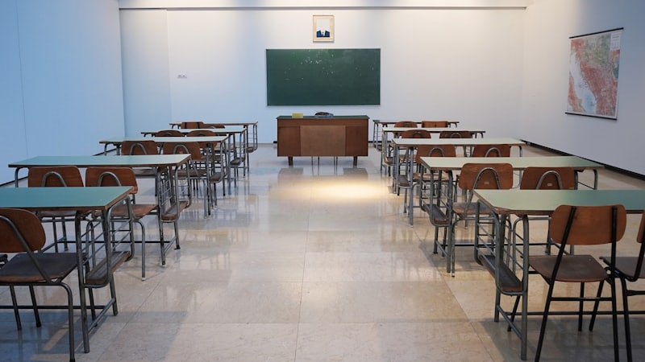

고2 탐구 선택을 앞두고 아무것도 못 정한 학생이 많습니다. 통합과학만 배운 상태에서 물화생지 중에 고르라니 막막한 게 당연합니다. 고1 과학과외에서 이맘때 상담이 가장 많은 주제입니다.
"쉬운 과목"은 없습니다, 맞는 과목이 있을 뿐
친구가 고른다고 따라가거나 "생명이 암기라 쉽다더라" 같은 소문으로 정하면 고2 1학기에 후회합니다. 과목마다 요구하는 게 다릅니다. 내가 잘하는 방식에 맞춰야 합니다.
과목별로 무엇을 요구하는가
- 물리 — 수학이 됩니다. 공식 적용과 그래프 해석이 편하면 유리합니다.
- 화학 — 계산과 암기가 반반. 몰 계산이 안 맞으면 힘듭니다.
- 생명과학 — 암기량이 많지만 유전 단원은 완전히 논리 문제입니다.
- 지구과학 — 자료 해석 위주. 표와 그림을 읽는 게 편하면 맞습니다.
남은 기간 배분
지금은 통합과학 내신이 먼저입니다. 다만 통합과학의 어느 단원이 편했는지가 곧 선택의 힌트가 되니, 시험 준비하면서 스스로 관찰해 보세요.
- 1주차 — 범위 개념을 정리하며 어느 단원이 편한지 표시합니다
- 2주차 — 교과서 자료와 실험을 확인합니다
- 3주차 — 학교 기출을 풀고 틀린 유형을 봅니다
- 마지막 주 — 오답 정리 후 편했던 단원으로 선택 후보를 좁힙니다
💡 티칭코칭은 서울 은평구 대성고등학교 학생에게 맞춘 1:1 과학과외를 방문·화상으로 제공합니다. 탐구 선택 상담도 함께합니다.
👉 대성고등학교 학교별 과외 안내 · 은평구 과학과외 선생님 · 은평구 지역 과외 안내